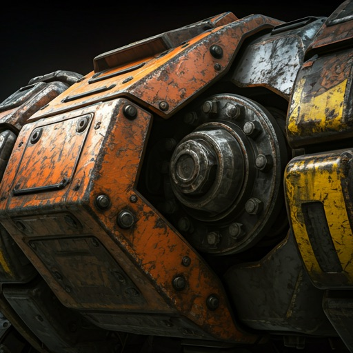

SEC_LEVEL: ALPHA
ADVANCED MECHA SYSTEMS
Propulsion diagnostics, hydraulic stability, and neural interface protocols for the next generation of industrial heavy-lift exoskeletons.
ID: MC-492-X

[ SCANNING_COMPONENT... ]
Sub-System
CORE_ACTUATOR_V4
System_Specifications
HARDWARE_REVISION: 1.0.4.B
grid_view
01_CORE
bolt
POWER_CELL_ARRAY
High-density plasma containment units providing continuous uptime for 720 hours under standard industrial load.
settings_input_component
TELEMETRY_DATA
HYDRAULIC_LOAD
Max_Capacity
14,200 KG
Response_Delay
1.2 MS
Coolant_Level
98%
warning
HAZARD_DETECTED
PRESSURE_SPIKE_DETECTED_LEG_ACTUATOR_R2
SYNC_RATIO
Measuring the alignment between pilot neural patterns and exoskeleton feedback loops.
94.2%
query_stats
MODULE_Z-88
PRECISION
REINFORCEMENT
Every bolt is torqued to aerospace standards. Every hydraulic line is quadruple-insulated against thermal bleed. Our components are built for environments where failure is not an option.
- check_circle TITANIUM_CHROMOLY_CHASSIS
- check_circle AUTONOMOUS_FAILSAFE_CORE
- check_circle HAPTIC_FEEDBACK_SYNAPSE
